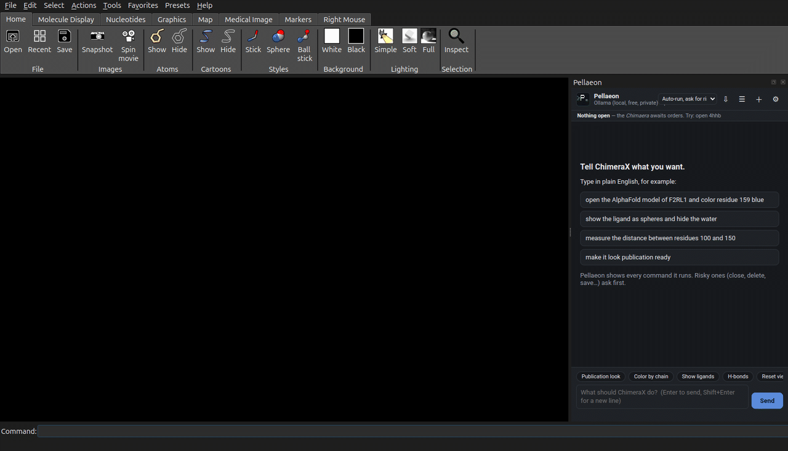
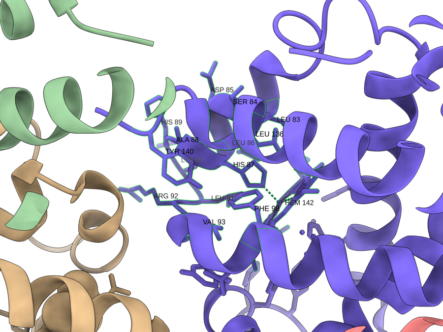
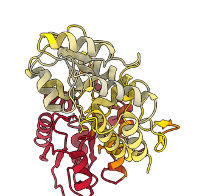
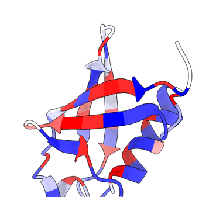
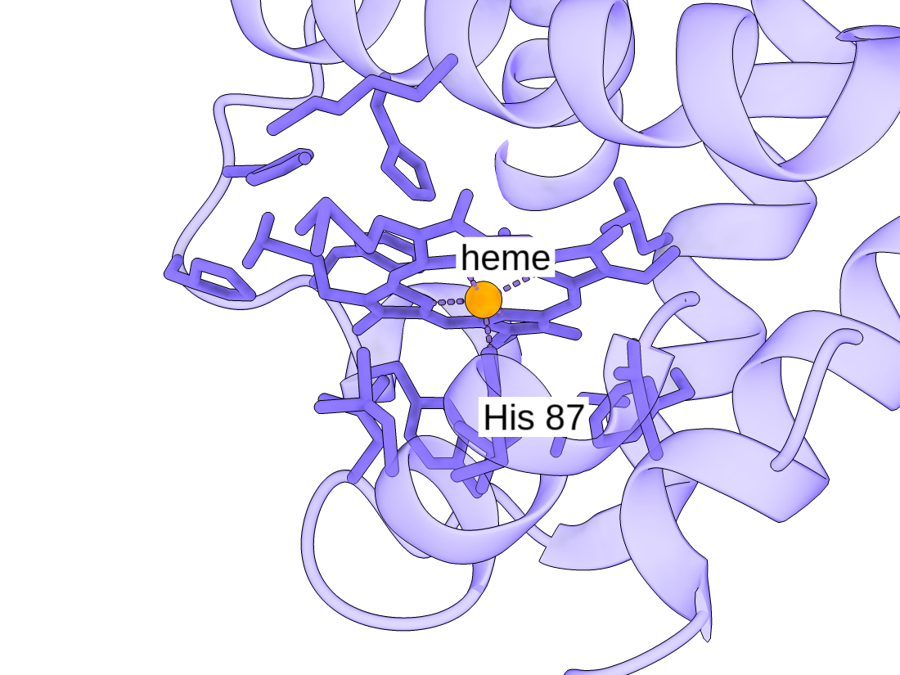

New Pellaeon is in the ChimeraX Toolshed
Talk to ChimeraX in plain English.
Open structures, inspect residues, compare models, and make figures from a chat panel inside ChimeraX. See the commands Pellaeon runs and copy or reuse them.
toolshed install ChimeraX-Pellaeon
Paste into ChimeraX's command line, or install it from Tools ▸ More Tools… without typing anything. Other ways to install

Three steps
- Install the panel. Paste the line above into ChimeraX's command line, or open Tools ▸ More Tools… and press Install next to Pellaeon. Details
- Connect a model. Point Pellaeon at Ollama on your computer, or paste a key for a cloud provider. Local or cloud
- Run the built-in test request. A button on the settings page opens ubiquitin and colors it by chain.
Setup steps: install guide. Choosing a local or cloud model: model guidance. With the default confirmation setting, file writes and destructive actions wait for your approval.
How it works
Pellaeon uses your current session and ChimeraX documentation to turn requests into commands. Each command is shown, and errors are returned to the model for correction.
Using Claude Desktop or Cursor with ChimeraX's own mcp command? How the two differ, and how they work together.
Reading a command
Every reply shows the ChimeraX commands it ran. Tap or focus on a part to see what it means.
model 1, chain A, residue 113, colored blue
What you can do
Explore a structure
Select a residue, inspect its neighbours, measure distances, or add annotations.
{kind=link}

Compare conformations
Superpose structures and inspect residue displacements and contact differences.
{kind=link}

Map your data
Import a residue-score table, check its numbering, and color the structure by value or category.
{kind=link}

Save figures and views
Export images with their recorded commands and sources. Save views and reuse figure styles.
{kind=link}

See it work
Recorded in ChimeraX with the panel. Choose an example, then play or stop the recording.
Follow this guide · Get the example files · Open full size
{kind=link}
Details
Loaded docs/examples/ubiquitin_hydropathy.csv through the panel's Import table action on 1ubq, then used the preview card's Apply to color chain A by the hydropathy column.
All 76 table rows are placed on chain A with 0 positions missing and no reference mismatches, and the structure turns blue-to-red by Kyte-Doolittle hydropathy under a key and title that sit clear of it; the camera does not move, so the colour is the only thing that changes.
Selected commands
color byattribute r:pellaeon_ubiquitin_hydropathy_hydropathy #1 palette blue:white:red range -4.5,4.5 target ac novalue gray key delete key blue:-4.5 white:0 red:4.5 pos 0.30,0.075 size 0.40,0.04 fontSize 20 2dlabels create pellaeon_title text "ubiquitin hydropathy (gray = no value)" xpos 0.30 ypos 0.165 size 20 color white view #1 zoom 0.85
Follow this guide · Get the example files · Open full size
{kind=link}
Details
"compare these two models and tell me what changed" then "which salt bridges break when it opens?" (on adenylate kinase, closed 1ake vs. open 4ake, chain A; the second copy of each dimer is hidden)
102 of the 214 paired residues move more than 2 A (mean 5.3 A, maximum 24.7 A in the 117-167 loop), and of the interactions that change, three salt bridges break (LYS 23-GLY 214, LYS 145-GLU 152, ASP 159-ARG 167) while one forms (GLU 114-ARG 165); the broken contacts are drawn as red dashes on the closed model and the new ones green on the open one, first fitted whole and then close in on LYS 23-GLY 214.
Selected commands
matchmaker #2/A to #1/A color byattribute r:pellaeon_disp #2/A palette 0,#bdbdbd:1,gold:3,orange:6,#b2182b range 0,6 target ac novalue #d9c6f0 color #1/A #b8c4d6 target ac transparency #1/A 60 target c hide #1/A models hide #1 & ~/A target acs hide #2 & ~/A target acs key delete key #bdbdbd:0 gold:1 orange:3 #b2182b:6+ pos 0.30,0.075 size 0.40,0.04 fontSize 20 2dlabels create pellaeon_title text "Cα shift after fit (Å); lavender = not compared" xpos 0.30 ypos 0.165 size 20 color white view #2/A zoom 0.85 matchmaker #2/A to #1/A show #1 models show #2 models hide #1 & ~/A target acs hide #2 & ~/A target acs transparency #1 55 target c transparency #2 55 target c distance delete show #1/A:8,10,12,13,14,15,16,17,18,23,31,36,39,40,58,61,84,85,88,89,119,121,122,123,132,145,152,156,159,167,170,171,175,176,198,214 atoms color #1/A:8,10,12,13,14,15,16,17,18,23,31,36,39,40,58,61,84,85,88,89,119,121,122,123,132,145,152,156,159,167,170,171,175,176,198,214 #b2182b target a distance #1/A:23@NZ #1/A:214@OXT color #b2182b dashes 6 radius 0.08 distance #1/A:145@NZ #1/A:152@OE1 color #b2182b dashes 6 radius 0.08 distance #1/A:159@OD1 #1/A:167@NH2 color #b2182b dashes 6 radius 0.08 distance #1/A:8@O #1/A:13@NZ color #b2182b dashes 6 radius 0.08 distance #1/A:10@O #1/A:119@NH1 color #b2182b dashes 6 radius 0.08 distance #1/A:12@O #1/A:16@N color #b2182b dashes 6 radius 0.08 distance #1/A:13@O #1/A:17@N color #b2182b dashes 6 radius 0.08 distance #1/A:14@O #1/A:18@N color #b2182b dashes 6 radius 0.08 distance #1/A:15@O #1/A:18@N color #b2182b dashes 6 radius 0.08 distance #1/A:18@OE1 #1/A:132@N color #b2182b dashes 6 radius 0.08 distance #1/A:31@N #1/A:84@O color #b2182b dashes 6 radius 0.08 distance #1/A:31@OG1 #1/A:85@O color #b2182b dashes 6 radius 0.08 distance #1/A:36@O #1/A:39@N color #b2182b dashes 6 radius 0.08 distance #1/A:36@O #1/A:40@N color #b2182b dashes 6 radius 0.08 distance #1/A:36@NH1 #1/A:156@CZ color #b2182b dashes 6 radius 0.08 distance #1/A:58@N #1/A:170@OE1 color #b2182b dashes 6 radius 0.08 distance #1/A:61@OD1 #1/A:89@OG1 color #b2182b dashes 6 radius 0.08 distance #1/A:88@O #1/A:175@OG1 color #b2182b dashes 6 radius 0.08 distance #1/A:119@O #1/A:121@N color #b2182b dashes 6 radius 0.08 distance #1/A:119@O #1/A:122@N color #b2182b dashes 6 radius 0.08 distance #1/A:119@O #1/A:123@N color #b2182b dashes 6 radius 0.08 distance #1/A:119@NH2 #1/A:198@O color #b2182b dashes 6 radius 0.08 distance #1/A:123@NH2 #1/A:156@NH1 color #b2182b dashes 6 radius 0.08 distance #1/A:171@O #1/A:176@N color #b2182b dashes 6 radius 0.08 show #2/A:1,3,5,6,8,25,31,45,46,47,48,49,50,51,52,79,84,85,88,105,107,113,114,116,117,118,132,138,141,143,159,161,165,175,176,179,180,193,195,213 atoms color #2/A:1,3,5,6,8,25,31,45,46,47,48,49,50,51,52,79,84,85,88,105,107,113,114,116,117,118,132,138,141,143,159,161,165,175,176,179,180,193,195,213 #1a9850 target a distance #2/A:114@OE1 #2/A:165@NH2 color #1a9850 dashes 6 radius 0.08 distance #2/A:5@O #2/A:85@N color #1a9850 dashes 6 radius 0.08 distance #2/A:25@O #2/A:79@ND2 color #1a9850 dashes 6 radius 0.08 distance #2/A:31@OG1 #2/A:88@NH2 color #1a9850 dashes 6 radius 0.08 distance #2/A:45@O #2/A:48@N color #1a9850 dashes 6 radius 0.08 distance #2/A:45@O #2/A:49@N color #1a9850 dashes 6 radius 0.08 distance #2/A:46@O #2/A:50@N color #1a9850 dashes 6 radius 0.08 distance #2/A:47@O #2/A:51@OD2 color #1a9850 dashes 6 radius 0.08 distance #2/A:48@O #2/A:52@N color #1a9850 dashes 6 radius 0.08 distance #2/A:113@O #2/A:117@N color #1a9850 dashes 6 radius 0.08 distance #2/A:114@O #2/A:117@N color #1a9850 dashes 6 radius 0.08 distance #2/A:114@O #2/A:118@N color #1a9850 dashes 6 radius 0.08 distance #2/A:132@O #2/A:138@ND2 color #1a9850 dashes 6 radius 0.08 distance #2/A:141@O #2/A:143@N color #1a9850 dashes 6 radius 0.08 distance #2/A:159@O #2/A:161@N color #1a9850 dashes 6 radius 0.08 distance #2/A:175@O #2/A:179@N color #1a9850 dashes 6 radius 0.08 distance #2/A:176@O #2/A:180@N color #1a9850 dashes 6 radius 0.08 distance #2/A:193@OH #2/A:195@NZ color #1a9850 dashes 6 radius 0.08 distance #2/A:1@SD #2/A:105@CE1 color #1a9850 dashes 6 radius 0.08 distance #2/A:1@CE #2/A:213@O color #1a9850 dashes 6 radius 0.08 distance #2/A:3@CG2 #2/A:107@CD1 color #1a9850 dashes 6 radius 0.08 distance #2/A:5@O #2/A:84@C color #1a9850 dashes 6 radius 0.08 distance #2/A:6@CD1 #2/A:179@CD1 color #1a9850 dashes 6 radius 0.08 distance #2/A:8@CB #2/A:116@CD1 color #1a9850 dashes 6 radius 0.08 key delete key #b2182b:lost #1a9850:gained colorTreatment distinct pos 0.30,0.075 size 0.40,0.04 fontSize 20 label delete pseudobonds 2dlabels change pellaeon_title text "Contacts lost (red, #1) and gained (green, #2)" xpos 0.30 ypos 0.165 size 20 color white view #1/A #2/A zoom 0.85
Follow this guide · Get the example files · Open full size
{kind=link}
Details
On 4hhb colored by chain with residues 80-100 of chain A labeled (piled up on purpose): "the labels overlap, tidy them", then "save this as a figure called hemoglobin"
Tidy labels nudged 2 of the 21 crowded chain-A labels to a free spot and dropped the 18 that could not fit, leaving 3 readable ones; the figure bundle (PNG, ChimeraX session, replay script, per-residue colors, draft legend, sources) was written to ~/Pellaeon figures/hemoglobin and the recording ends on the exported PNG itself.
Selected commands
label #1/A:97 residues offset 0.00,9.08,0.00 label #1/A:86 residues offset 0.00,9.53,0.00 label delete #1/A:96 #1/A:94 #1/A:99 #1/A:93 #1/A:95 #1/A:98 #1/A:91 #1/A:92 #1/A:87 #1/A:90 #1/A:88 #1/A:89 #1/A:83 #1/A:84 #1/A:85 #1/A:82 #1/A:80 #1/A:81 residues label #1/A:100 #1/A:97 #1/A:86 size 16 height fixed onTop true color black bgColor #ffffffd9 save "/home/yamir/Pellaeon figures/hemoglobin/hemoglobin.png" width 2400 height 1800 supersample 3 save "/home/yamir/Pellaeon figures/hemoglobin/hemoglobin.cxs"
Two editions
The ChimeraX edition is a native bundle with a docked panel (install it); the classic edition drives UCSF Chimera 1.x through its REST server and shows the panel in your browser (classic edition). Both editions share the chat interface and model providers. Table overlays and some analysis tools are ChimeraX-only: see the feature differences.
Privacy
With a local Ollama server, model requests are processed on your computer. Fetching structures and annotations still contacts external databases (PDB, AlphaFold DB, UniProt, ClinVar, ConSurf-DB). With a cloud provider, your request, the list of open models, the current selection and any table you loaded are sent to that provider. Screenshots are shared only when the review-the-view option is enabled in Settings.
Keys are stored on your computer, never in ChimeraX sessions. Privacy detail, including the free tiers · Where things are stored